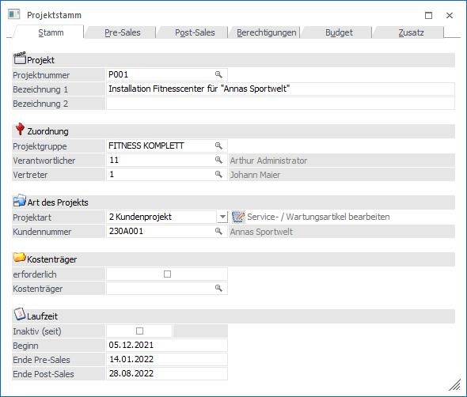
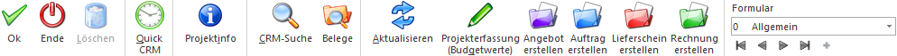

Im Projektstamm, welcher über den Menüpunkt…
1 WinLine FAKT
1 Stammdaten
1 Projektverwaltung
1 Projekt
… aufgerufen wird, erfolgt die Anlage und Definition von Projekten.

Bei der Erfassung eines Projekts kann die geschätzte bzw. kalkulierte Laufzeit und die voraussichtlich anfallenden Kosten (Budget) hinterlegt werden. Bei der weiteren Bearbeitung werden die tatsächlich angefallenen Kosten erfasst und der Projektstatus, mit der daraus resultierenden Abschlusswahrscheinlichkeit, aktualisiert.
Aufgrund dieser Werte kann der aktuelle Stand eines laufenden Projektes bewertet werden. Dadurch ist es möglich zeit- und kostenkritische Vorgänge frühzeitig zu erkennen.
Buttons

Ø Ok
Durch Anwahl des Buttons "Ok" bzw. der Taste F5 wird das Projekt gespeichert.
Ø Ende
Durch Anwahl des Buttons "Ende" bzw. der Taste ESC wird das Fenster geschlossen und alle nicht gespeicherten Eingaben verworfen.
Ø Löschen (nur im Register "Stamm" anwählbar)
Mittels des Buttons "Löschen" können angelegte Projekte wieder entfernt werden.
Hinweis
Wird die Projektnummer in Belegen verwendet, erfolgt eine zusätzliche Sicherheitsabfrage, ob das Projekt trotzdem gelöscht werden soll (im Beleg selbst bleibt die Projektnummer erhalten).
Ø Quick CRM
Wenn dieser Button angeklickt wird, kann ein CRM-Fall zu dem gerade geöffneten Projekt erfasst werden. Voraussetzung dafür ist:
ü Es muss eine gültige CRM-Lizenz vorhanden sein.
ü Der Benutzer muss ein CRM-Benutzer sein.
ü Es müssen entsprechende CRM-Aktionen bzw. CRM-Workflows mit der Kennzeichnung "QUICK CRM" angelegt sein.
Hinweis
Es werden im WinLine Standard 9 CRM-Aktionen (CRM-Gruppe "100") mitgeliefert.
Ø Projektinfo
Es wird die Projektabrechnung geöffnet, in welcher alle relevanten Daten des aktuellen Projekts aufgelistet werden.
Ø CRM-Suche
Mit Hilfe dieses Buttons wird die CRM Suche geöffnet und die CRM-Fälle des Projekts angezeigt.
Ø Belege
Durch Anwahl des Buttons "Belege" wird das Programm "Belege" geöffnet und die Belege des aktuell ausgewählten Projektes angezeigt.
Ø Aktualisieren (nur im Register "Budget" anwählbar)
Durch Drücken dieses Buttons werden die ausgewiesenen Werte im Register "Budget" aktualisiert.
Ø Projekterfassung (Budgetwerte) (nur im Register "Budget" anwählbar)
Durch Anwahl dieses Buttons können die Budgetwerte für das Projekt erfasst werden (Artikel und Ressourcen). Nähere Informationen diesbezüglich entnehmen Sie bitte dem Kapitel "Projekterfassung".
Ø Angebot/Auftrag/Lieferschein/Rechnung erstellen (nur im Register "Budget" anwählbar)
Mit Hilfe dieser Buttons können Angebote, Aufträge, Lieferscheine und Rechnungen für das aktuelle Projekt erfasst werden. Es wird hierfür ein neuer Beleg für den entsprechenden Kunden geöffnet und die Projektnummer des aktuell ausgewählten Projektes übernommen. Wird die Belegstufe im Beleg geändert, wird die Projektnummer wieder entfernt.
Hinweis
Neben diesem automatischen Weg können natürlich auch Belege manuell (über die Belegerfassung mit Eingabe der Projektnummer) erfasst werden.
Ø Formular
Über die Auswahlbox "Formular" kann gewählt werden, in welcher Form der Stammdatensatz bearbeitet werden soll. Wenn die Option "0 - Allgemein" gewählt wird, dann wird wieder in die "Normalansicht" mit allen Eingabefeldern zurückgeschalten.
Hinweis
Die Definition der Formulare für die individuelle Gestaltung erfolgt im Programm WinLine START über den Menüpunkt "Vorlagen - Vorlagen Anlage - Individuelle Formulare".
Ø VCR-Buttons
Über die so genannten VCR-Buttons, welche in jedem Register zur Verfügung stehen, kann durch Mausklick zwischen den Datensätzen geblättert werden.
ü  Damit kann der
erste Datensatz angesprochen werden.
Damit kann der
erste Datensatz angesprochen werden.
ü  Damit kann der
vorherige Datensatz angesprochen werden.
Damit kann der
vorherige Datensatz angesprochen werden.
ü  Damit kann der
nächste Datensatz angesprochen werden.
Damit kann der
nächste Datensatz angesprochen werden.
ü  Damit kann der
letzte Datensatz angesprochen werden.
Damit kann der
letzte Datensatz angesprochen werden.
ü  Damit wird die
nächste freie Nummer für die Neuanlage gesucht.
Damit wird die
nächste freie Nummer für die Neuanlage gesucht.